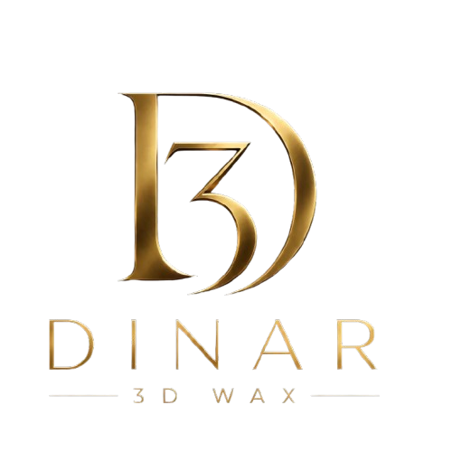

Instala Dinar 3D Wax
Agrégala a tu pantalla de inicio para abrirla como una app, sin el navegador.

Modelos digitales listos para impresión 3D directa en cera casteable y fundición de alta fidelidad.
Comparativa real medida en balanza 0.001g. Cera azul genérica vs Dinar Rosa 0.025mm. Mismo modelo ID 2862.
Sin poros = sin retención. En un lote de 100 anillos, son 7gr de oro que no pierdes.
✓ Validado en fundiciónMicroscopía 100x: cera azul llena de burbujas. Rosa: superficie vítrea continua.
✓ Validado en fundiciónUñas de 0.3mm no se rompen en soporte. Garras micropavé salen completas.
✓ Validado en fundición🛡️ Garantía de quema limpia · Lote trazable Dinar Lab
Entre 12% y 18% por pieza. La cera azul es porosa: absorbe revestimiento y retiene metal. Nuestra cera rosa 100% pura es sólida a 0.025mm, por eso el peso final de oro es el que calculas, no más.
No es resina. Es cera pura microcristalina industrial MJP. Se imprime fundida capa por capa, no curada con luz. Resultado: superficie cerrada, sin micro-burbujas que generan rugosidad y pérdida de oro en el acabado.
No. Burnout estándar a 730°C, el mismo que usas para cera inyectada. 0.0% ceniza, sin expansión. No requiere horno de sinterizado ni lavado agresivo.
Sí. Resolución real de 2900 DPI y capa de 25 micras. Entregamos con soportes solubles ya removidos en zonas críticas. Bordes de <0.3mm no se deforman.
Medellín: entrega el mismo día o 24h. Resto de Colombia: 24-48h con mensajería asegurada. Modelos empacados en cápsula anti-golpe. Si necesitas, ajustamos talla en el archivo antes de imprimir.
Responde nuestro joyero de planta, no un bot.
Agrégala a tu pantalla de inicio para abrirla como una app, sin el navegador.